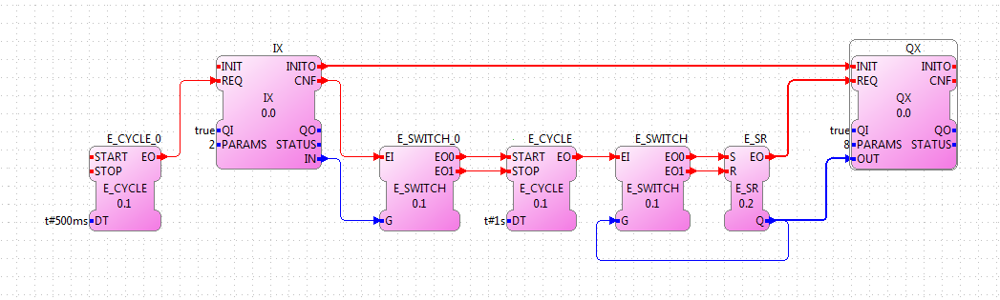
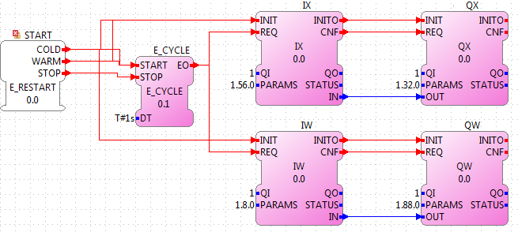
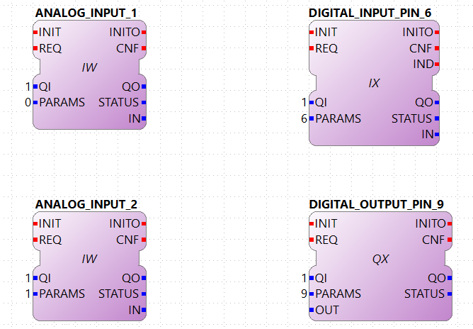

Using QX, IX and similar allows you to access the inputs and outputs of a supported hardware. Of course, in the case of a normal computer, this doesn't apply since it doesn't have I/O that you can control directly like you do on a PLC (normally boolean). In order to access the I/O of a hardware, you need to set the PARAMS data input to a corresponding value to select which I/O to access. 4diac FORTE should be compiled with the corresponding module, that can be selected in CMake. You find here the values to be set to PARAMS for the following supported platforms:
The following picture shows an example application from the Blinking tutorial which is extended with IX and QX function blocks. The extended application periodically toggles on pin number 8. It can be started and stopped via pin number 2. You can connect an LED to obtain a blinking light.
The PARAMS data input in the IX and QX FB define which pin should be used. The application also contains E_CYCLE and E_SWITCH function blocks (which are not in the Blinking tutorial). The first one generates an event every 500 ms. This way the IX block will check the hardware input every half second if the signal has changed. E_SWITCH_0 starts or stops the action, depending on the IN data output of the IX function block.
Remember that if you have any problem and cannot find the solution in the documentation, visit the forum.
To use the digital and analog IOs of the Raspberry-SPS please use the IX and QX function blocks for one bit as well as the QW and IW function blocks for word which are provided in the io folder of the tool library. Configure your 4diac Device with the correct IP and mapp an application on it as it is illustrated within the following image.
The structure of the PARAMS data input ports is busChannel.deviceNumber.portNumber. The Raspberry-SPS has two I2C bus channels. The number of the different devices is listed in the following table. The port number always starts at 0.
| Device Type | Device Number |
|---|---|
| 8 digital inputs | 56 |
| 8 digital outputs | 32 |
| 5 analog inputs | 8 |
| 4 analog inputs | 88 |
Odroid is an embedded board that you can say it's a more powerful Rapsberry Pi, and it has analog inputs. In order to use the I/O of this board. It works similar to the Raspberry Pi, so you can use QX and IX with the number corresponding to the pin number, and to access the Analog Inputs, you should use IW. 0 and 1 should be set to PARAMS of IW in order to access the first and second analog inputs respectively.
The PiFace 2 is a hat for the Raspberry Pi with Digital I/Os. You can control the Inputs and Outputs from 0 to 7 just using the right number, similart to the Raspberry Pi.
Attention: The PiFace was not tested, so if you find a problem or want to add support to the other features of the board, please file a bug.
This module uses the library provided for the µMIC.200. You need the umic_dio.h, umic_relay.h and umic_led.h headers and also the umic.so library to be present in your system and accessible by the compiler.
The parameters should be the type and its number separated by a dot:
TYPE.NUMBER
NUMBER depends on TYPE, where TYPE can be (all are in lowercase):
Example:
led.4 → controls the LED1 color red
Example:
dio.3 → will access Digital I/O 3 at pin 7 of
the µMIC.200
Example:
relay.1 → will control the NC relay at pins
14- 15
Attention: To use the relay and led, in some cases you might have to change some header files in your µMIC.200. You need to find the files /usr/include/umic_led.h and /usr/include/umic_relay.h and add two things:
If you don't want to use the relay and led, or you don't want to change the header files, go to ~/org.eclipse.4diac.org/src/modules/umic/processinterface.h and set the definitions of UMIC_LED_ENABLED and UMIC_RELAY_ENABLED to zero.
The MLPI interface was tested on a IndraControl XM22 PLC from Bosch Rexroth. In order for 4diac FORTE to access the I/O, a PLC program must be running already in the PLC. 4diac FORTE will connect to this program and send/receive information to/from it.
The parameters that you need to use in PARAMS depend therefore from the names you gave to the I/Os in the PLC program. That means that you need to create your program and give them names. An example was tested where the Digital Inputs were called di01, di01, di02 and so on, and similarly with Digital Outputs (do00, do01, do02, etc). To access them from 4diac FORTE, the parameters were:
This section is a reference of the parameters that can be used in 4diac FORTE to access the I/O of the LMSEV3. Reading this section carefully without using them could be quite boring and even useless,because the details will be forgotten if not used. We recommend to give a quick reading in order to know what can be accessed using 4diac FORTE. The example presents the control of a motor using a PID controller.
The standard access refers to the access through well defined I/O blocks, that allow transparency in the access of I/O in different platforms. Each block supports different parameters in the PARAM input, which defines the I/O of the system that will be accessed. The blocks used to control the I/O are named with two capital letters.
The first letter indicates the direction:
The second letter indicates the size of it:
So, for example a boolean input is read using the functional block IX. The output word, for example the PWM value of a motor is controlled with a QW block. Not all sizes are implemented in all platforms.
The parameters for the Lego Mindstorms EV3 were designed for general use, and extension of them is easy to achieve. The format of the parameters follow 2 important rules:
The only capital letters allowed are the A,B,C,D when used to define the output ports of the EV3 (outA, outB, outC, outD).
The parameters are given in three parts separated by points:
port.typeOfIO.specific
port
The first part of the parameter specifies the port of the Input or Output. For the EV3, the possible values are [in1 | in2 | in3 | in4 | outA | outB | outC | outD | emb]. The first eight are directly related to the actual ports of the EV3. The 'emb' port refers to anything that can be managed in the EV3 but not in the I/O ports, until now the leds and buttons, but in the future the screen and speaker would also be reference with the 'emb' port.
typeOfIO
The second part, specifies what is actually connected to the specified port. The possible values are [sensor | sensorw | button | led | motor]. The difference between 'sensor' and 'sensorw' is that 'sensor' is used for boolean sensors, and 'sensorw' for sensors which values are words (16 bits). The 'led' and 'button' are used to control the embedded leds and buttons of the EV3. 'motor' is used for connected motors in any of the outputs.
It must be clear that not all of the types can be used with any port. For example a led is only an output, so if used with a input, for example IX it won't intialize. Also, if used to control as a word QW, it won't initialize either.
specific
As its name says, this third parameter has no general form, and can also be formed of other several parameters separated by points(as in case of the led). Depending of the second parameter, the allowed values for this one are different, and it will be seen in the follow section.
For each possible typeOfIO, the list of possible specific part of the parameters are presented, followed by the limitations and examples.
led (output only):
Each specific is used to control each one of the four leds available. The orange led doesn't exist, but is the sum of red + green, so in order to turn on an orange light of the left for example, both the green and red of the left must be turned on.
Limitation: 'led' must be used with QX and with the 'emb' port.
Example:
emb.led.right.red
button (input only):
Reads the buttons of the EV3.
Limitation: 'button' must be used with IX and with the 'emb' port.
Example:
emb.button.enter
sensorw:
The sensorw is used with sensors that read a word value instead of a boolean and normally are more complex than regular touch sensors (boolean). Each sensor specifies how it retrieves the data, how many values and the format of it. Specifications of the supported sensors by the ev3dev are listed here.
Each one of the sensors' values is stored in a different file in the EV3. The specific [0-N] determines which file it is. For example the GYRO sensor can show the angle and the rotation speed. The values are store in value0 and value1 files, so to access just the rotation speed, the '1' specific must be used. The actual value must be checked in the link above.
The 'mode' specific is used to change the mode of the sensor according to its specification. As an input, mode will retrieve the mode in which the sensor is working, and as output, the mode will be changed. The mode are mirrored using a 0 index according to the specification of the sensor.
Limitation: sensorw cannot be used with boolean blocks (QX or IX). It must be used with an in[1-4] port, but is not restricted to input or output blocks when the specific "mode" is used.
Limitation: the specific [0-N] can be used only as input, and the number shouldn't be greater than the allowed by the sensor in the mode that's working at the moment of initialization.
Examples:
Let's see an example of using the GYRO sensor specified here. The GYRO works in GYRO-ANG by default, showing only one value, then the only possible parameter is:
in1.sensorw.0 (IW)
If a 1 instead of a 0 were used, the initialization would have failed.
If the mode of the sensor wants to be retrieve, the "mode" specific should be used with the input IW.
in1.sensorw.mode (IW)
Because the GYRO sensor by default is in GYRO-ANG and GYRO-ANG is the first of the list according to the link above, the FB will read a 0 (0-index from the list in the link).
If then the sensor's mode is changed using a QW with "mode" specific
in1.sensorw.mode (QW)
and writing a value 3 (0-index mode), the sensor's mode will change to GYRO-G&A wich shows 2 values, angle and rotation speed. After changing the mode, two IW blocks with parameters
will retrieve the both values.
ATTENTION!!! To get the rotation speed, the block with parameter "in1.sensorw.1" must be initialized AFTER the mode has been changed, because before changing the mode, the file for the rotation speed doesn't exist in the system and cannot be read.
sensor (input only):
Used to control touch sensor (binary). sensor' specific is a subset of sensorw' specific. It doesn't allow mode, and even though the value is always stored in '0', the '0' specific must be used for two mainly reasons: 1. To have a standarized way of showing the parameters, and 2. to avoid problems in the future where a new sensor is stored in '1' instead of '0'.
Limitations: 'sensor' must be used with QX and with an in[1-4] port.
Example:
in2.sensor.0
motor
The 'enable' controls the state of the motor accroding to the OUT input of QX. A TRUE value turns ON the motor and a FALSE value turns it OFF. It must be used with QX.
The 'reset' zeroes the position, pwm and speed values, and turn off the motor with a TRUE value in OUT. A FALSE value in OUT has no effect. It must be used with QX
The 'stop' specific must not be confused with stoping the motor, because it specifies the way the motor behaves when PWM is zero according to the value written to OUT. It must be used with QW
The 'pwm' reads the current pwm when using with IW of the motor or writes the desired pwm for the motor when using with QW.
The 'position' reads the current position of the motor. In how many steps a rotation is divided, can be read from using the 'rot' specific. It must be used with ID. The position can be written, wich sets the position to the desired value.
The 'speed' reads the current speed in positions per second. It must be used with IW.
The 'rot' reads the motor specication of how many steps are in one turn of the motor. This can be read from the specifications of the motor normally and it's not necessary to add the block in an application just to read this information. It must be used with IW.
Limitations: Event though each specific has its limitation regarding the type of block to use with, the typeOfIO "motor" must be used with one of the outputs of the EV3 out[A-B]
Examples:
outB.motor.enable (QX)
outB.motor.pwm (QW writes the desired pwm, IW reads the actual pwm)
outB.motor.position (ID)
This section doesn't add any new information, but summarize which parameters and FB should be used with each I/O.
Touch sensor connected to an input port. It must be used with IX
in[X].sensor.[Y]
where X is the number of the input in the EV3 (1-4) and Y is the value number where to read from according to the sensor. Read the specification of the sensor to be sure. Start trying from 0 if no information is available.
One of the 6 buttons of the EV3. It must be used with IX
emb.button.[up | down | left | right | enter | backspace]
Only one of the inputs can be selected for each IX.
Led of the EV3. It must be used with QX.
emb.led.[right | left].[red | green]
The orange led does not exist, but is the sum of green + red.
Motor connected to an output port. The FB to use depends on the parameter of the motor that wants to be handled.
Turn ON/OFF the motor. It must be used with QX.
out[X].motor.enable
Where X is the output capital letter of the EV3 (A-D, in uppercase). A TRUE value in OUT input turns the motor ON, and a FALSE value turns the motor OFF.
Reset the motor variables and stop. It must be used with QX.
out[X].motor.reset
Where X is the output capital letter of the EV3 (A-D, in uppercase). A TRUE value in OUT resets all of the motor parameter attributes to their default values. This will also have the effect of stopping the motor. A FALSE value doesn't have any effect.
Read current duty cycle (pwm) from a motor. It must be used with IW.
out[X].motor.pwm
Where X is the output letter of the EV3 (A-D, in uppercase). The read value is between -100 and 100. It might seem confusing reading an input from an output but even though the signal is from an output, it is an input to the system.
Read the current speed of the motor. It must be used with IW.
out[X].motor.speed
Where X is the output letter of the EV3 (A-D, in uppercase). It reads the velocity in steps per second. How many steps are in one turn of the motor can be read with the parameter "rot" (see next). If a motor has 360 steps in one turn and the speed is 720, then the speed is 2 rotations per second.
Read the number of steps in each turn. It must be used with IW.
out[X].motor.rot
Where X is the output letter of the EV3 (A-D, in uppercase). This value is fixed in the motor and can be found in the specifications of the motor and it normally shouldn't be used in an application.
Read the current position of the motor. It must be used with ID.
out[X].motor.position
Where X is the output letter of the EV3 (A-D, in uppercase). If the motor was in position 0 and the "rot" parameter returns 360, then it makes 3 turns, the position will be 1080.
Write the position of a motor. It must be used with QD.
out[X].motor.position
Where X is the output letter of the EV3 (A-D, in uppercase). Sets the current position to a specific value.
Write a desired duty cycle (pwm) for a motor. It must be used with QW.
out[X].motor.pwm
Where X is the output letter of the EV3 (A-D, in uppercase). The value range should be between -100 and 100.
Specify a desired behaviour when the pwm is set to 0. It must be used with QW.
out[X].motor.stop
Where X is the output letter of the EV3 (A-D, in uppercase). Possible values are 0, 1 and 2:
sensor with values of 16 bits (not touch sensor)
Read a sensor value. It must be used with IW.
in[X].sensorw.[Y]
where X is the number of the input in the EV3 (1-4) and Y is the value number where to read from according to the sensor. Read the specification of the sensor to be sure. Start trying from 0 if no information is available.
Read a sensor's mode. It must be used with IW.
in[X].sensorw.mode
where X is the number of the input in the EV3 (1-4). The read value is an index number according to the list of modes of the sensor.
Write a sensor's mode. It must be used with QW.
in[X].sensorw.mode
where X is the number of the input in the EV3 (1-4). The value to be written should be the index number according to the list of modes of the sensor.
The custom access allows the user to access part of the system that are not implemented in the standard access. Care must be taken, since critical part of the system might be accessed. For each block, the specification of the new inputs and outputs are given.
fileWriter: Block to write to any file in the system. The special inputs are:
FILE_NAME: absolut path of the file.
Example: /sys/class/tacho-motor/motor1/command
S1: String to write to the file
Example: run-direct
fileReader: Block to read from any file in the system. The special inputs and outpus are:
FILE_NAME [input]: absolut path of the file.
Example: /sys/class/tacho-motor/motor1/duty_cycle
S1 [output]: String read from the file
Example: 58
You can see the supported protocols:
Supported Communication Protocols
You can see the examples:
If you want to go back to the Where to Start page, we leave you here a fast access
Or Go to top